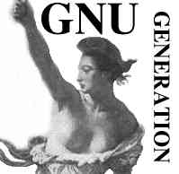

|
Live & Funky try dyne:bolic GNU/Linux 100% FREE LIVE CD |

|
R A S T A | |
while ( love & passion ) {
for( fight = 0 ; rights < freedom ; rights++ )
fight = standup( rights );
free( babylon );
}
|
|
S O F T W A R E | |
pioneering multimedia on GNU/Linux
with many JAH People in the World
|
Live & Funky try dyne:bolic GNU/Linux 100% FREE LIVE CD |
|
|
and let them live in Peace, Harmony - Justice and Fairness -/+
Big up all fresh Juvenile
Dash whe all Copycat
Leggo all envy, greed and jealousy Mother is Creation |

Ghetto Phun ++ SOFTWARE: jaromil ++ HARDWARE: afrotech ++ ART: biennale |
Burung burung Manyar boot dyne:bolic 100% free GNU/Linux multimedia liveCD M2M radio - migrant to migrant radio show Bricolabs - open community infrastructure ASCII - squatted internet workspace Streamtime - the Tigris Project, FLOS in Baghdad genoa, 21-22 july 2001 - dossier to not forget the hackmeeting - italian hackers T.A.Z the transhackmeeting - transnational hackers T.A.Z Neruda's seabirds peculiar intimate doubts statement in: [english] [italiano] [deutsch] |
जेह रास्टाफ़री लिविटी हमे का आज़ादी आशीर्वाद दें!यह मुफ़्त सोफ़्ट्वेयर है,इसे अपने और अपने लोगों की भलाई के लिये आपस मे बाटें, दूसरों का सम्मान करें और उंहे अपने विचार व्यक्त करने दें,खुद भी आज़ाद रहें और दूसरों को भी आज़ाद होनें दें। सूकून के साथ लम्बी और कामयाब ज़िंदगी गुज़ारें!
लेकिन इंसाफ़ के बगैर कोई शांती नही हो सकती। यह सोफ़्ट्वेयर एक प्रतिरोध है, इस बेबीलोन के समान दुनिया में जिसमें हमारे सवांद करने और ग्यान और सूचनाओं को आपस में बांटने के तौर तरीकों को ज्यादा से ज्यादा काबू में करने की कोशिश की जाती है। यह सोफ़्ट्वेयर उन सभी लोगों के लिये है जो अपनी चेतना और सदभावना के शब्दों को ज़ाहिर करने के लिये नये खर्चीले उपकरणो को नही खरीद सकते। यह सोफ़्ट्वेयर सिर्फ़ सूचना के उपभोग के लिये नही है , बल्कि इसमे उत्पादन करने के लिये उपकरणो की एक पूरी श्रंखला है, ये एक पूरा का पूरा मल्टीमीडिया स्टूडियो है, अब आपको खुद को ज़ाहिर करने के लिये कुछ भी खरीदने की ज़रूरत नही है। आज़ादी और ग्यान को बांटना ही विकास के मजबूत नियम है , और यहीं से ये सोफ़्टवेयर आता है।
इस बेबीलोन के समान दुनिया में अपनी आवाज़ को दूसरों तक पहुंचाने के लिये पैसा एक खास ज़रूरत है।पूंजीवादी और सिद्धांतवादी सरकारें पूरी दुनिया में बडे पैमाने पर टेलीविज़न पर एकाधिकार का इस्तेमाल कर अपने सिद्धांतों का प्रचार करते हुये शासन करते है, और सभी आलोचनाओं को दबा दिया जाता है।
यह एक संघर्ष है मौजूदा ओपरेटिंग सिस्टम से मुक्त होने के लिये , जो हमेशा खर्चीले हार्डवेयर की मांग करता रहता है , जो हमे मुफ़्त प्लेयर देता तो है लेकिन अपनी खुदकी आवाज़ बनाने के लिये खर्च करना पड्ता है। और जैसी की अरबों में कहावत है जो आपकी हिफ़ाज़त करता वही आपको खत्म करने ताकत रखता है।
डाएन:बोलिक खुद के ज़रिये उत्पादन और पब्लिश करने का उपकरण है। यहां कुछ भी खर्च करने की ज़रूरत नही है, यहां सब कुछ है जो आपको उत्पादन के लिये चाहिये।
|
Raptores orbis, postquam cuncta vastantibus defuere terrae, mare scrutantur: si locupes hostis est, avari, si pauper, ambitiosi, quos non oriens, non occidens satiaverit; soli omnium opes atque inopiam pari adfectu concupiscunt. Auferre trucidare rapere falsis nominibus imperium, atque ubi solitudinem faciunt, pacem appellant. |
| "de Vita Agricolae", Tacito (98 b.C.) |
thanks for visiting, be well!